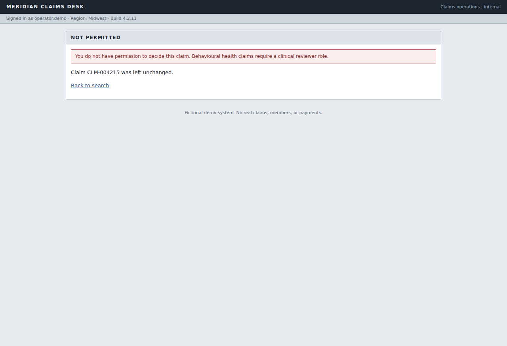
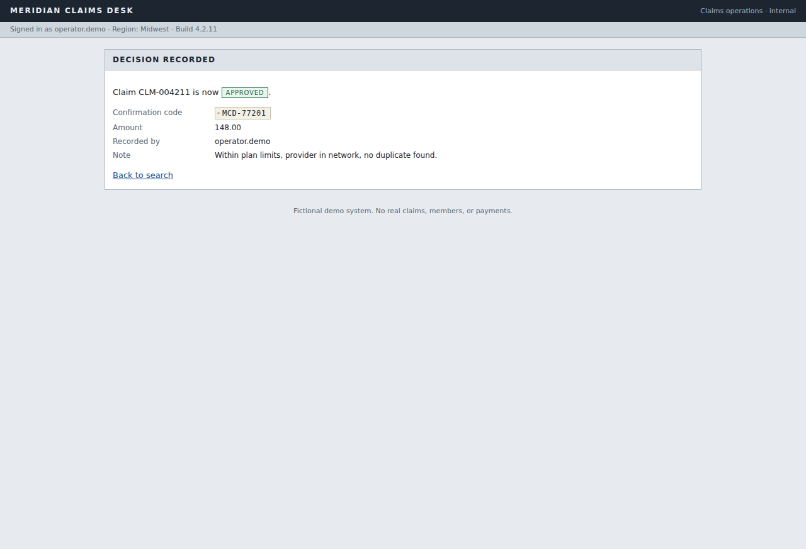
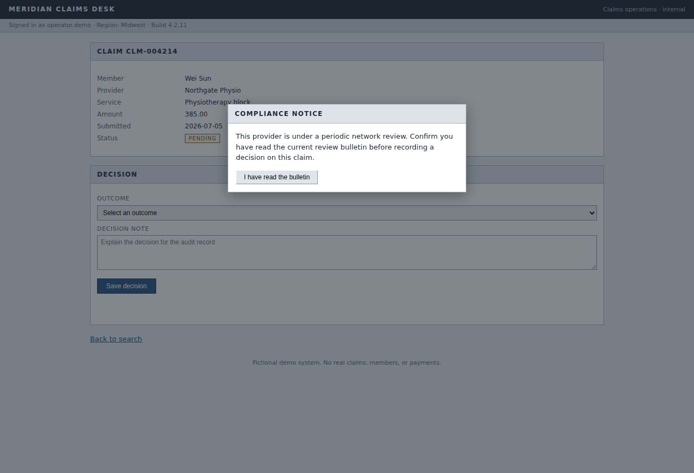

A language model drives a real browser until the job is done. That successful run is compiled into a typed, versioned artifact. Every run after it executes from the artifact with zero model calls. When automation genuinely cannot continue, it hands the same live session to a person.
Real fields from the committed artifact. The red punch is the one state-changing step; the compiler marked it risky by inspecting what the run actually did, and replay refuses to execute it without an explicit confirmation flag.
A trace is one run, with one set of values, full of planner rationale, retries and dead ends. Re-running it is not automation, it is a recording. The artifact is what a second system can read, type-check, parameterise and hold to a contract.
The planner emits one typed tool call per turn and is never allowed to write a selector. It describes controls the way a person would: role plus accessible name, or a test id.
At the moment each action succeeds, the loop describes the element it just touched, generates every plausible way to name it, and probes each one against the live DOM. Only descriptions matching exactly one element survive.
Capability plus parameters in, structured result out. Steps, checkpoints, known outcomes, bounded retries, typed outputs. No model, enforced three different ways.
# one discovery run, then the artifact does the work
11 planner turns ──compiler──▶ 8 steps · 2 checkpoints · 2 typed outputs · 8 known outcomes
25 literal values replaced by bindings
every locator re-derived from live measurement
A locator that still resolves after the application changes can quietly match the wrong control. That is the worst failure mode in UI automation, because it succeeds. So every step carries ranked fallbacks and a verify predicate that turns a stale match into a loud failure.
"target": {
"candidates": [
{ "strategy": "role", "role": "link", "name_equals": "{{input.claim_id}}", "confidence": 0.9 },
{ "strategy": "text", "text": "{{input.claim_id}}", "confidence": 0.6 },
{ "strategy": "css", "value": "table.tbl-9f3a > tbody > tr > td > a", "confidence": 0.3 }
],
"ambiguity_policy": "fail_if_multiple",
"verify": { "kind": "attribute_contains", "attr": "href", "value": "/claims/{{input.claim_id}}" }
}
Bindings are substituted inside locator names and verify predicates too, which is
what makes replay look for a different link on every invocation. The grammar is closed —
only {{input.x}} and {{env.X}} resolve — so loading an artifact can never
execute anything.
Typed inputs with patterns and enums, typed outputs with extraction bindings, checkpoints, known business outcomes, and the safety constraints the run actually needed. Referential integrity is validated at load.
No querySelector, no element
handles, no CSS in the required path. The whole engine is also tested against an in-memory
surface with no browser at all — which is the proof the coupling is really absent.
anthropic and openai with an
object that raises on any attribute access, then runs a complete replay. It passes.llm_calls is carried to the caller and asserted zero on
every run.$ python -m sableau.cli replay --capability meridian.record_claim_decision.v1.0.0.json \
--confirm-risky --param claim_id=CLM-004212 --param outcome=APPROVED \
--param "note=Imaging authorised under referral 88213, within schedule."
step.ok s3_open_the_matching_claim_re strategy=role candidate=1 # testid was gone; fell back
step.ok s6_save_the_decision risk=risky attempts=1
SUCCESS/NONE | outputs=confirmation_code=MCD-77201, decided_amount=612.5 | llm_calls=0
"No claims match that search" is a successful execution that returned bad news. Collapsing it into a generic error forces every caller to parse strings to find out whether anything is actually wrong. Each condition below was produced against the live application, not simulated.
| Condition | Category | Code | What replay does |
|---|---|---|---|
| Search returns nothing | business | RECORD_NOT_FOUND | returns the answer, no error |
| Claim already decided | business | ALREADY_PROCESSED | stops before writing a second time |
| Parameter fails its schema | hard | INVALID_INPUT | rejected before the browser is touched |
| Application rejects the form | hard | VALIDATION_ERROR | captures the app's own message |
| Operator role not permitted | hard | PERMISSION_DENIED | screenshot, DOM snapshot, return |
| Assertion no longer holds | hard | CHECKPOINT_MISMATCH | evidence, return |
| Host outside the allowlist | hard | POLICY_VIOLATION | refused before execution |
| Control cannot be found | recoverable | MISSING_CONTROL | next locator candidate, then a person |
| Two controls match | recoverable | AMBIGUOUS_CONTROL | refuses to guess, escalates |
| Modal covers the form | recoverable | UNEXPECTED_DIALOG | hands the session to a person |
| Backend 503 on first load | recoverable | TRANSIENT_FAILURE | bounded capability restart, then succeeds |
| Session ended mid-run | recoverable | SESSION_EXPIRED | classified so the caller can re-auth |


Two orderings in the engine were bugs first. Known outcomes are checked before postcondition checkpoints, because a permission denial makes the "decision recorded" checkpoint fail and reporting CHECKPOINT_MISMATCH there is technically true and operationally useless. They are also checked before escalation, so a dead session does not page a human.
The console holds the same surface object the engine is using. A human click goes through the same resolve-and-act path, subject to the same allowlist, recorded in the same audit trail. One process, one event loop, one ownership token — so "same session" is true by construction rather than by hope.

Resume carries a decision: continue from the current step, retry it, skip it, or abort. An operator abort has its own outcome code rather than being folded into a generic failure.
git clone https://github.com/Lokesh1566/sableau.git && cd sableau pip install -e ".[dev]" && python -m playwright install chromium ./scripts/up.sh # target app on :8099, shared Chromium on :9222 ./scripts/make_evidence.sh # discovery, replays, every error case, handoff, tests python -m pytest -q # 68 passed
The committed discovery evidence used the offline rule-based planner, because the machine I built on had no API key. The Anthropic tool-use planner is complete code on the same interface, and provenance records which one ran.
One surface is implemented. Feature declaration and compatibility refusal are real and tested, but accessibility-tree, coordinate and desktop surfaces are designed for, not written.
The demo application is friendlier than a genuinely hostile legacy system. Generated ids, nested framesets and canvas widgets would stress locator synthesis much harder than this does.